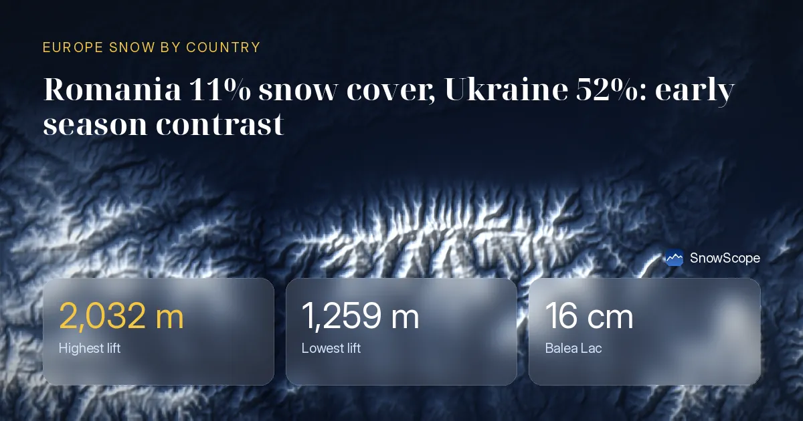
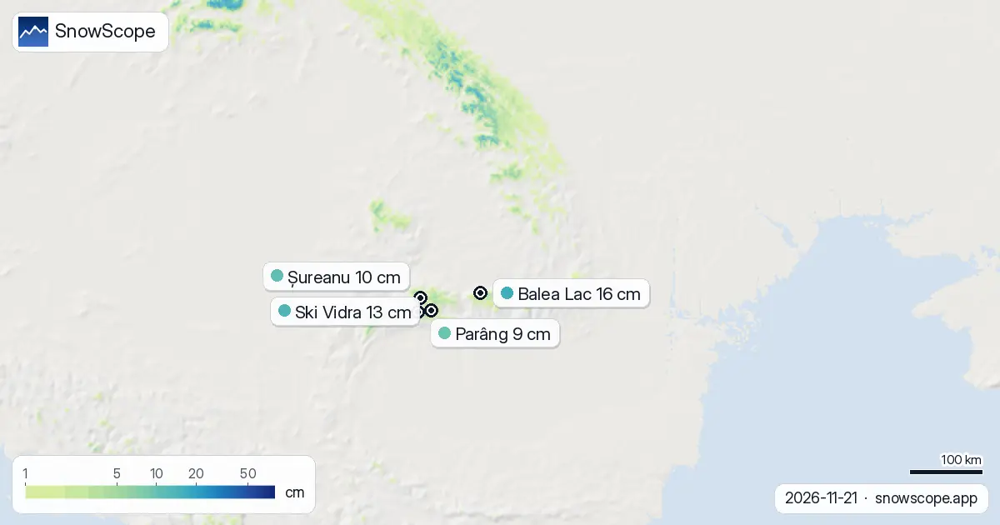

Romania 11% snow cover, Ukraine 52%: early season contrast
Romania has snow on 11% of its high terrain today, while Ukraine across the border sits at 52% cover. The gap reflects different weather patterns and altitude: Romania's Carpathians have gathered 7 cm in the past 72 hours, but the season is just beginning to establish itself after a patchy start.
See the live snow forecast for Balea Lac in the SnowScope appSnow depth, powder alerts and the 3D map, free.
Romania and Ukraine: why the difference
Snow hydrology teaches us that early-season patterns depend on where cold air masses move and which slopes face the prevailing wind. Today, Ukraine's higher white share reflects more consistent snowfall across its mountain ranges over recent days. Romania's 11% cover is lower, but the mountain snowpack is thickening: at heights above 2000 m, snow depth now averages 14 cm and covers 99% of the terrain.
The water stored in Romania's highest peaks is real and growing. Above 1500 m, 75% of the area holds some snow. Below that, the picture is fragmented. This is typical for late November in the Carpathians, when elevation bands tell the true story.
| Country | White | Deepest resort | Next 7 days |
|---|---|---|---|
| Romania | 11 % | Balea Lac | 37 cm |
| Bulgaria | 1 % | Bansko | 22 cm |
| Ukraine | 52 % | Драгобрат | 17 cm |

Neighbours and next week
Ukraine leads the region right now with 17 cm at its deepest point. Bulgaria holds just 1% white share, its peaks still catching flakes. Within a week, Romania will gain ground: the forecast shows a maximum of 37 cm new snow by 28 November, compared to Ukraine's 17 cm and Bulgaria's 22 cm in the same window.
This shift matters for water storage. Romania's reservoirs and rivers will see larger contributions once this fresh snow settles and melts through spring and early summer.

Where snow is falling hardest
The Rodna Mountains are Romania's current leader with 17 cm of fresh snow in 72 hours. The Retezat follows with 15 cm, and the Călimani Mountains hold 10 cm. These are the zones storing the most water right now. On 23 November, a 13 cm event is forecast to push totals higher across all ranges.
The snow line sits at 1500 m today. Above it, accumulation is building steadily. Below it, only scattered patches remain on north-facing slopes.
Resorts and the week ahead
Balea Lac, the highest resort at 2032 m, holds 16 cm—the deepest base in the country. Ski Vidra carries 13 cm, Șureanu 10 cm. All five main resorts are forecast to gain 15 to 18 cm over the next three days. This is not deep cover yet, but the trend is upward.
Of Romania's 52 ski areas, 22 now report some snow. That number will grow as November moves into December and the snow band descends.
Water storage trend
Snow coverage has jumped from 3360 km² yesterday to 7300 km² today—a gain of 3940 km². A week ago it stood at 9120 km², so we are rebuilding after a dip mid-week. The volatility is normal for this season: a rain event can erase low-altitude snow rapidly, then a cold spell and fresh accumulation restore it.
From a hydrological view, the volume matters more than the area percentage. The 14 cm mean depth above 2000 m represents stored water that will feed rivers and reservoirs through the winter and spring.
What lies ahead
The 7-day forecast shows 37 cm maximum new snow, with the heaviest event—13 cm—on 23 November. After that, activity quietens. The second week of December is expected to bring only 17 cm across the country.
For now, Romania's snow story is one of rapid assembly at altitude. The hydrology is favourable: cold air is entrenched above 1500 m, and the mountains are catching what moisture the weather systems deliver. By early December, the base will be more reliable.
Tips for skiers
- Monitor the snow line closely. It sits at 1500 m today; any rain event below that height will not add to the high-altitude store.
- The Rodna and Retezat Mountains are leading water accumulation. Routes and reservoirs fed by these ranges will see the most significant runoff gains.
- Fresh snow on 23 November may be unconsolidated. If you travel off-piste, check the official avalanche bulletin and understand the layers beneath any recent powder.
- Early-season bases are thin. Rocks and sparse vegetation remain visible on many lower slopes. Plan your terrain choice accordingly.
- By early December, storage in the highest zones will be more secure. The pattern is consolidating, not retreating.
About these numbers
Resort snow depths are the deepest snow on the resort's upper slopes on the date shown; they are estimates for an area, not a measurement at one point. Forecasts can change. Always read the official avalanche bulletin before going off-piste.
Cite this report
For research, teaching or the press: the numbers and charts are free to reuse under CC BY 4.0 with this citation.
SnowScope (2026), Romania 11% snow cover, Ukraine 52%: early season contrast, https://snowscope.app/blog/en/2026/11/romania-snow-vs-neighbours-21-november-2026.html, accessed 2026-11-21
SnowScope (Atlas Labs). (2026, November 21). Romania 11% snow cover, Ukraine 52%: early season contrast. SnowScope snow reports. https://snowscope.app/blog/en/2026/11/romania-snow-vs-neighbours-21-november-2026.html
BibTeX
@misc{snowscope2026romaniasnowvsneighbours2,
author = {{SnowScope (Atlas Labs)}},
title = {Romania 11% snow cover, Ukraine 52%: early season contrast},
year = {2026},
month = nov,
howpublished = {\url{https://snowscope.app/blog/en/2026/11/romania-snow-vs-neighbours-21-november-2026.html}},
note = {Published 2026-11-22 10:03 UTC; accessed 2026-11-21}
}· CC BY 4.0 · Methods, data and tools →
Balea Lac: snow and temperature by height, this winter vs last (tools) →
Follow Balea Lac
Free: a message when fresh snow is coming, and the forecast every morning.
More snow reports

Savin Kuk above Žabljak picked up 22 cm of snow from 13 to 19 November and still has 6 cm today. Kolašin 1450 and 1600 are bare. The week day by day, and the next chances.

Up to 30 cm of snow fell on northern Velebit and Bjelolasica on Friday 13 November 2026. By Tuesday it was gone. Day by day, what the mountains kept, and when snow comes back.

Only Borovets and Bansko have a trace of snow at the top today, 2 cm each. A week ago Borovets had 11 cm. Day by day, and the one snowy day in the forecast.